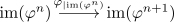

injective module homomorphism between artinian modules is an isomorphisma
Proposition
Let $R$ be a ring and $N$ be an artinian modules and $M$ another module over $R$. Suppose $\varphi: M \rightarrow N$ is a module-monomorphism. Then $\varphi$ is also a module-isomorphism
Proof
Note that $\mathrm{im}(\varphi^n) \subseteq \mathrm{im}(\varphi^{n-1}) ... \subseteq N$. Hence by artinianness this chain stabilizes and we get an isomorphism

Suppose $\varphi$ is not surjective. Then choose an element $f \not\in \mathrm{im}(\varphi)$ and consider $\varphi^n(f) \in \mathrm{im}(\varphi^n)$. Choose a preimage $g$ under the isomorphism $\varphi^n_{\vert \mathrm{im}(\varphi)}$ in $\mathrm{im}(\varphi^n)$.
Then it follows that
\begin{align*}
f - g \in \mathrm{ker}(\varphi^n)
\end{align*}
contradiction to $\varphi$ (and thus $\varphi^n$) being a monomorphism.